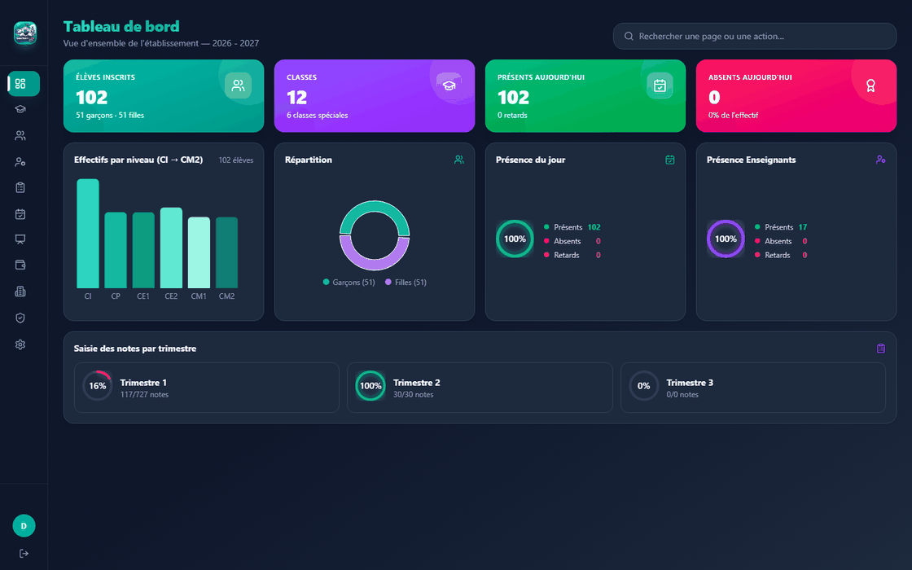
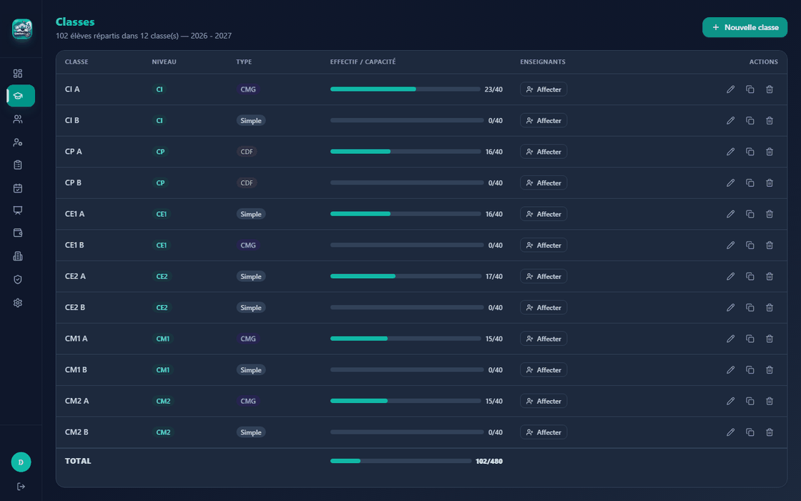
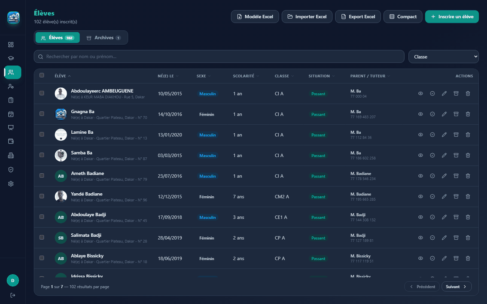
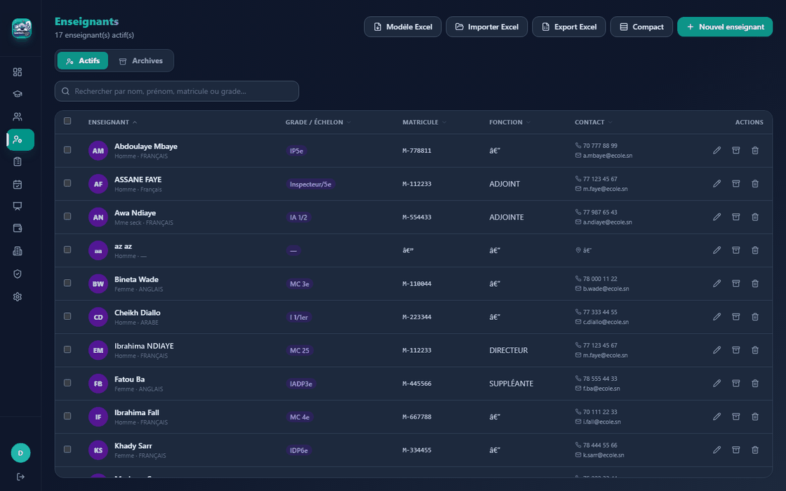
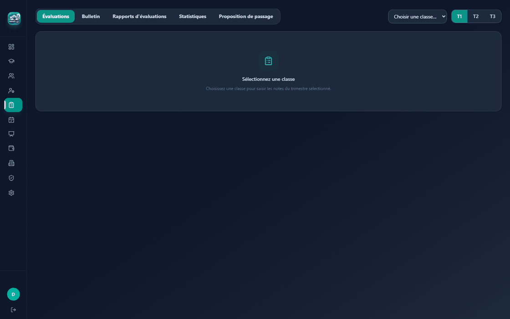
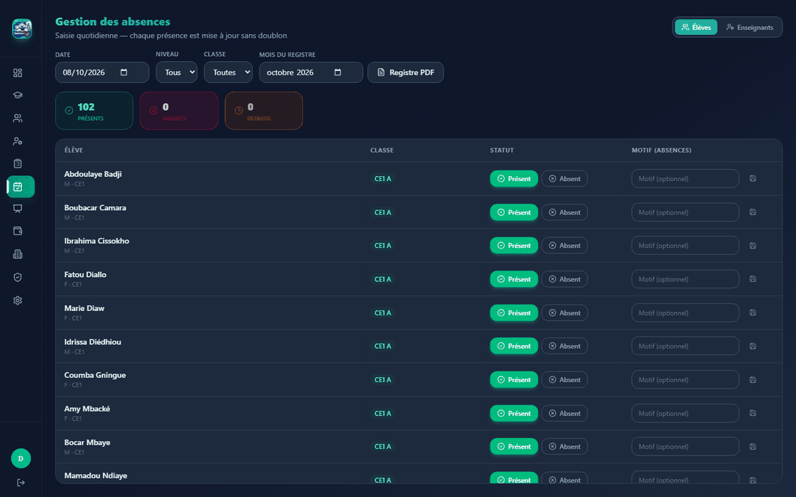
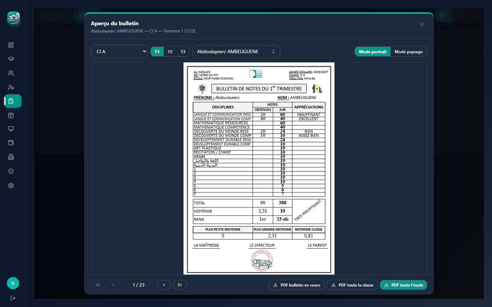
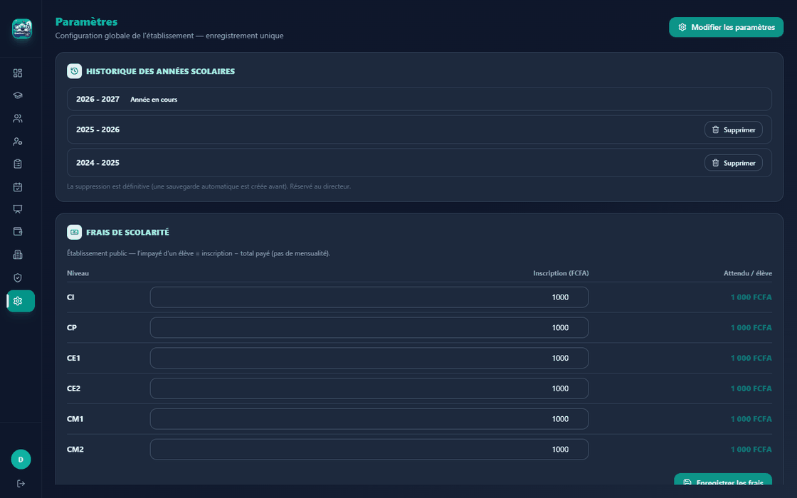

Tableau de bord
Statistiques dynamiques en un coup d’œil : effectifs filles/garçons, répartition par niveau, remplissage des classes, présence du jour et avancement de la saisie des notes par trimestre.
Version 1.0.0 · Windows · Logiciel de bureau
GestiEcole est un logiciel de gestion scolaire conçu pour les écoles élémentaires du Sénégal — du Cours d’Initiation (CI) au CM2. Élèves, classes, enseignants, évaluations, présences, paiements et bulletins : tout est réuni dans une application Windows unique, conforme au modèle de l’Inspection Académique (IA) et de l’Inspection de l’Éducation et de la Formation (IEF).
Vos données restent sur votre ordinateur, dans une base locale. Aucune donnée scolaire n’est envoyée sur Internet.








Tableau de bord
Fonctionnalités
GestiEcole regroupe les neuf modules essentiels de la vie scolaire, pensés pour le fonctionnement réel des écoles élémentaires du Sénégal.
Statistiques dynamiques en un coup d’œil : effectifs filles/garçons, répartition par niveau, remplissage des classes, présence du jour et avancement de la saisie des notes par trimestre.
Création et gestion des classes avec type (Simple, CMG, CDF), effectif réel face à la capacité, affectation des enseignants avec rôle principal, duplication rapide et ligne de total.
Fiches complètes : état civil, scolarité, situation (passant, redoublant, transfert, abandon…), parents, adresse et photo d’identité — utilisée pour les trombinos des bulletins. Recherche en temps réel et filtres par niveau ou classe.
Plus de 30 informations par enseignant : état civil, carrière, affectation, situation personnelle, formation et diplômes, coordonnées. Affectation possible à plusieurs classes.
Matières configurées par niveau et trimestre avec coefficients de pondération. Grille élèves × matières, moyennes pondérées ramenées sur 10, rangs par classe, sauvegarde automatique, navigation clavier complète, copie depuis un autre trimestre et export CSV.
Saisie quotidienne Présent / Absent / Retard avec motif optionnel, sans doublons, filtres par date, niveau et classe, et génération du registre d’appel mensuel en PDF.
Génération PDF des documents officiels : liste nominative, fiche synoptique et bulletins trimestriels (photo d’identité, notes par matière, coefficients, moyenne sur 10, rang, mention, appréciation, signatures) conformes aux standards IA/IEF. Export Excel des listes nominatives inclus.
Suivi des inscription, scolarité mensuelle (avec mois concerné), cantine et autres frais. Filtres par élève, type et niveau, totaux par type et ligne de total.
Identification administrative de l’établissement : Inspection Académique, IEF, district, codec, année scolaire, chef d’établissement, inspecteurs et adresse — reprises automatiquement sur les documents PDF. Possibilité de définir un mot de passe d’accès.
Pensé pour le terrain
GestiEcole ne force pas votre école à changer ses méthodes : il suit le modèle officiel de l’Inspection Académique et de l’IEF.
Cours d’Initiation, CP, CE1, CE2, CM1, CM2 — avec trois trimestres par année scolaire.
Note maximale configurable par matière, coefficients modulables, moyennes ramenées sur 10 comme le veut la norme élémentaire.
Excellent à partir de 8,5 · Très Bien 7,5 · Bien 6,5 · Assez Bien 5,5 · Passable 5 · Insuffisant en dessous — calculées sur le bulletin.
Les PDF reprennent les informations des Paramètres (IA, IEF, chef d’établissement, année scolaire) pour rester conformes au modèle officiel.
Installation
Aucune compétence technique n’est requise. L’installation prend quelques minutes sur n’importe quel ordinateur Windows 64 bits.
Cliquez sur « Télécharger GestiEcole ». Le fichier GESTION.ECOLE_1.0.0_x64-setup.exe (environ 66 Mo) est enregistré sur votre ordinateur.
Double-cliquez sur le fichier téléchargé et suivez l’assistant. L’application s’installe pour l’utilisateur courant, sans droits administrateur.
Un raccourci est créé sur le bureau. Au premier lancement, saisissez les informations administratives de votre établissement dans les Paramètres (IA, IEF, année scolaire…).
GestiEcole utilise un système de licence par poste. Lors du premier démarrage, l’assistant vous guide pour l’activation. Un guide utilisateur PDF est fourni avec l’application.
Téléchargement officiel
Téléchargez l’installateur officiel de la version 1.0.0 pour Windows (64 bits).
Empreinte SHA-256 de l’installateur officiel :
A59CE51D814F5E53AFF52796550EA7CA57A4A92C5A4A3DF5082BDB0F683ECA69
Vous pouvez vérifier l’intégrité du fichier téléchargé avec la commande PowerShell :
Get-FileHash .\GESTION.ECOLE_1.0.0_x64-setup.exe -Algorithm SHA256
Questions fréquentes
Non. GestiEcole v1.0.0 est un logiciel de bureau pour Windows 64 bits uniquement. Aucune version pour les autres plateformes n’est disponible à ce jour.
Non. Toutes vos données scolaires (élèves, notes, présences, paiements…) sont enregistrées dans une base locale sur votre ordinateur. L’application fonctionne hors connexion ; seule la validation périodique de la licence nécessite Internet.
Oui. GestiEcole utilise un système de licence par poste, avec signature cryptographique. L’assistant de premier démarrage vous accompagne pour l’activation de votre poste.
GestiEcole effectue une sauvegarde automatique quotidienne de la base (entre 22 h et 23 h, avec une rétention de 30 jours). Nous recommandons néanmoins de sauvegarder régulièrement le dossier de données sur un support externe.
Oui. Les documents PDF (bulletins trimestriels, listes nominatives, fiches synoptiques, registre d’appel) reprennent les informations administratives saisies dans les Paramètres — IA, IEF, chef d’établissement, année scolaire — et suivent le modèle de l’Inspection Académique, avec moyennes sur 10 et mentions automatiques.
Oui. Un guide utilisateur PDF est fourni avec la version 1.0.0. Il détaille chaque module, de l’installation aux bulletins.
Un ordinateur Windows 64 bits relativement récent (Windows 10 ou supérieur recommandé), quelques centaines de mégaoctets d’espace disque et une connexion Internet pour l’activation de la licence. Aucun serveur ni base de données à installer : tout est inclus.
Téléchargez GestiEcole v1.0.0 et configurez votre établissement en quelques minutes.
Télécharger pour Windows